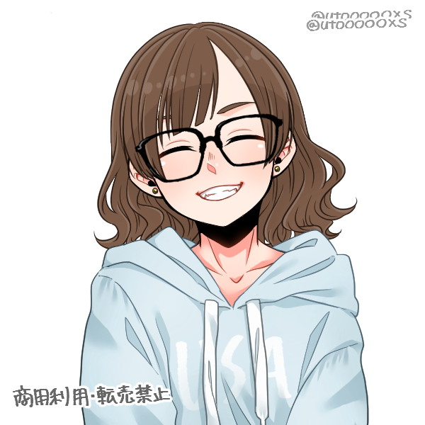

Janis Costadelli
Oi! Eu sou a Janis e tenho 22 anos!
Prazer em te conhecer!
Atualmente estou estudando programação,
mas sou formada em biomedicina também.
Gosto muito de conhecer e aprender coisas novas!
-
Instituições de ensino:
- Universidade São Judas
- Labenu
-
Empregadores Prévios:
- Mano's Comércio de Doces
- Empresário Cobrança
Meus projetinhos

Processo Seletivo Labenu
Esse foi o primeiro projeto que realizei, com a intenção de ingressar na instituição para aprender a programar.
Site da Loja Kame
Site realizado durante a primeira semana do curso da Labenu, que consistia em criar o site de uma loja fictícia, com o intuito de entender melhor sobre HTML, CSS e futuramente JavaScript
- Habilidades Tecnicas e
- Relacionamento Interpessoal
- Inteligência Emocional
- Capacidade Analítica
- Organização
- Empatia
Comportamentais